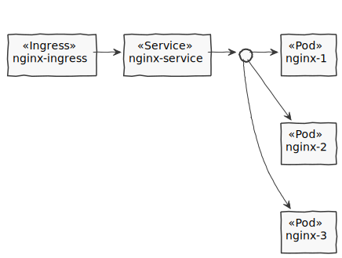

Ngnix
Deployment Diagram

Deploy Ngnix
# Creates the deployment and rollout three nginx instances
kubectl apply -f k8s-apps/nginx/nginx-deployment.yaml
# Create a service which will route the traffic to one of the three nginx pods
kubectl apply -f k8s-apps/nginx/nginx-service.yaml
# Create a port-forwarding from local host to the service
kubectl port-forward service/my-ngnix-service 8080:8080
# Enable a Ingress controller
vagrant ssh -c "microk8s.enable ingress"
# Create a ingress
kubectl apply -f k8s-apps/nginx/nginx-ingress.yaml
The nginx is now reachable from outside the cluster, to test it open http://192.168.60.10/path-of-my-ingress in a Browser.
URLs
- https://kubernetes.io/docs/concepts/workloads/controllers/deployment/
- https://kubernetes.io/docs/concepts/services-networking/service/
- https://kubernetes.io/docs/tasks/access-application-cluster/port-forward-access-application-cluster/
- https://kubernetes.io/docs/concepts/services-networking/ingress/